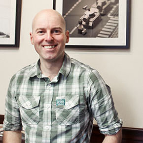

{{ section markdown }}
I seem to take a lot of photographs of toys. I also like messing about with light.
As you may have noticed I have a fondness for taking photos of LEGO. My work has been published in national newspapers in the UK, seen on BBC television, and featured in many magazines all over the world with subjects as diverse as German political culture and Brazilian business news. I'm a regular participant in LEGOLAND California's Star Wars days, and have had my work exhibited all over the world.
I was also part of the 100% Stuck in Plastic collective, a small group of photographers dedicated to bringing toy photographers together, sharing knowledge and trying to push toy photography further. I took part in some of their exhibitions and wrote the occasional blog post over on the website. Do stop by!
You will also find me on the usual social networks (links at the bottom of the page), including my full portfolio over on Flickr.
{{ endsection}}